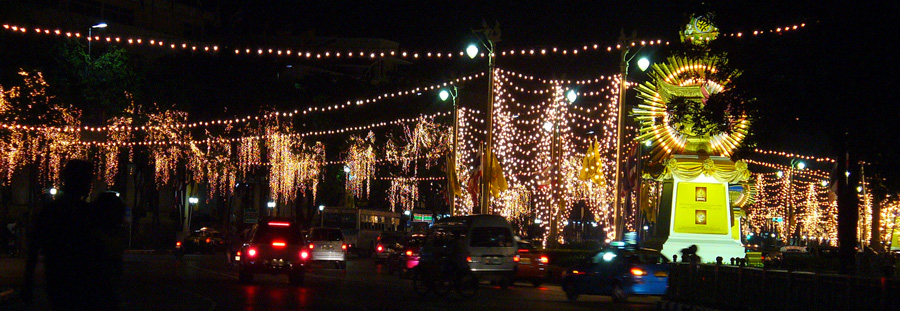
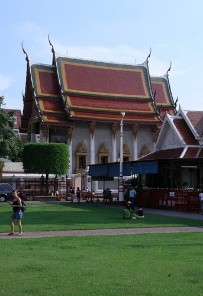
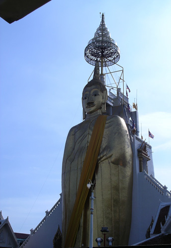
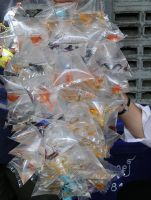
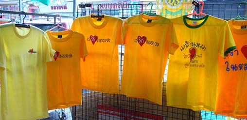
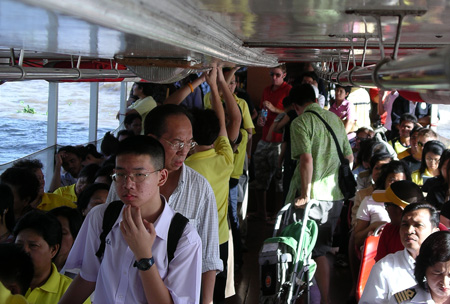
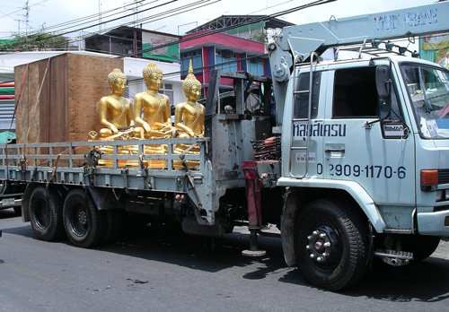
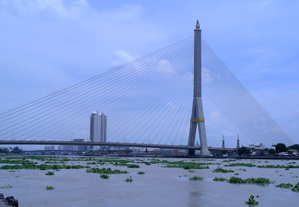
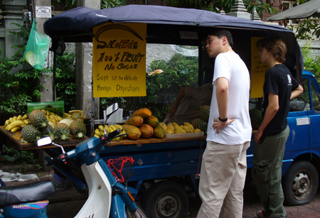
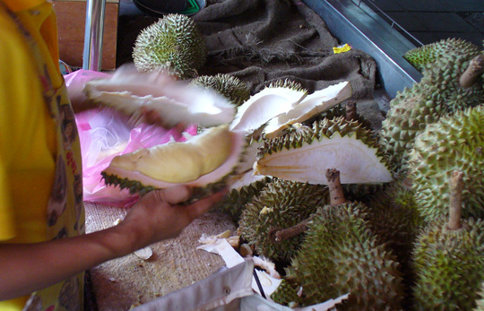

Thailand Trav-E-Logs ©
Another Bangkok Start
|  | |
| back: 2006 index page | Celebrating the King's accession to the thrown. |
================================= After 6 months in Southeast Asia, went home to visit family (including first grandson), see friends, file taxes, check on "things", and then booked another flight to Bangkok. This time, 12-month open return, so finally should be able to complete the Grand Tour of Southeast Asia. =================================
May, 2006
|
"What color are you?" That question to a Thai means, "On what day of the week were you born?" Just in case you don't know your color, here is the code*:
The King was born on a Monday, so yellow becomes the color of royal celebrations. You may have seen TV news coverage recently of massive crowds wearing yellow polo shirts to show respect for the longest reigning monarch in the world. Wonder why you see guys wearing pink? It just may mean the photo was taken on a Tuesday, or that they were born on a Tuesday. After all, you have a one in seven chance of being born on a Tuesday. Photos, clockwise from the top: 'Love the King' tees; Chao Phraya Express; New Buddhas for Taewez Temple; My Favorite Bridge; Mobile Fruit Stand near Khao San Road; Durian - King of Fruit; Selling Gold Fish; Tallest Standing Buddha in Bangkok; Temple grounds.   |
      Enjoy! Bill ------------------------------ |
* Wikipedia can be used to determine a day of the week -- it links to a calendar for any given year.
Questions? Email me at the juno.com address dancer2SEAsia.
"Travel is Fatal to Bigotry, Prejudice, and Narrow-minded ness" .... attributed to Mark Twain
next: Keng Tung, Myanmar
back: 2006 index page